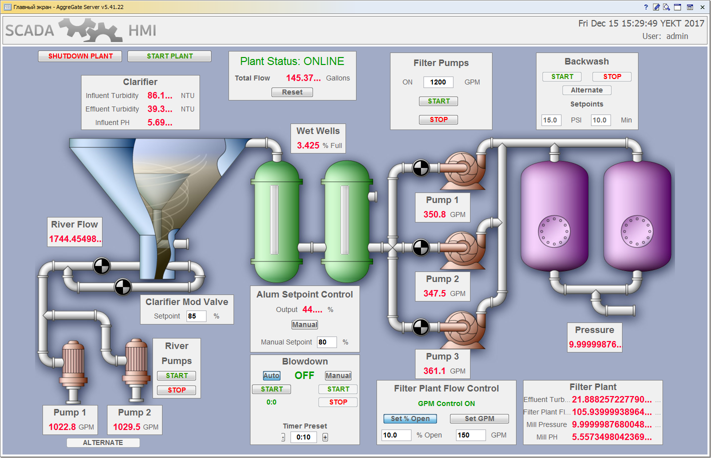

Смотрим демонстрационный проект
Знакомство с системой целесообразно начать с имеющихся в нем демо-проектов.В демонстрационном проекте хорошо показана работа HMI в SCADA AggreGate. Виртуальный макет работающий как настоящая автоматизированная система.

Рисунок 1. Демо – проект
На рисунке 1 показана работа фильтрованной станции. HMI имеет все для отображения информации в нужном нам виде. У SCADA системы имеются еще демо проекты показывающие возможности данной системы.